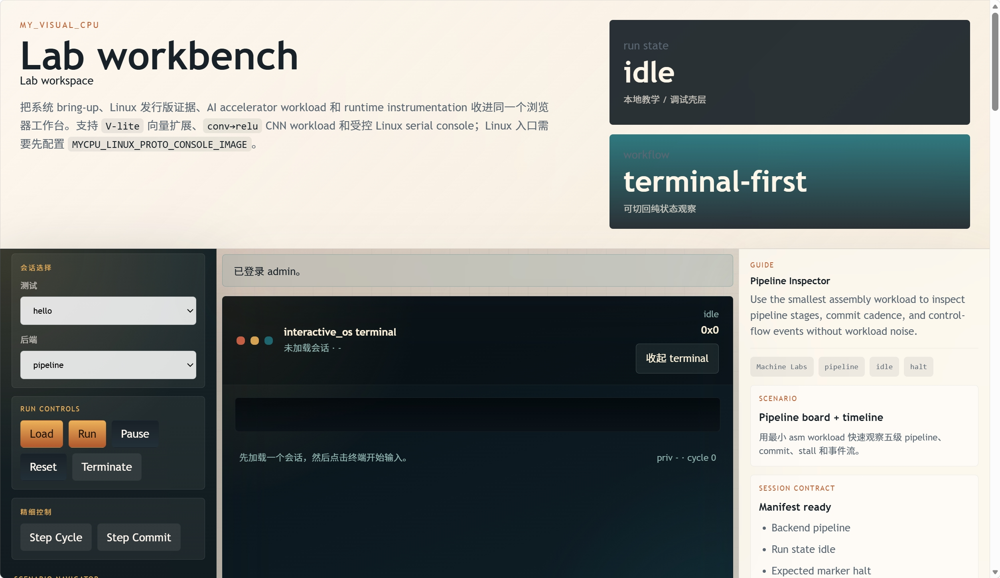
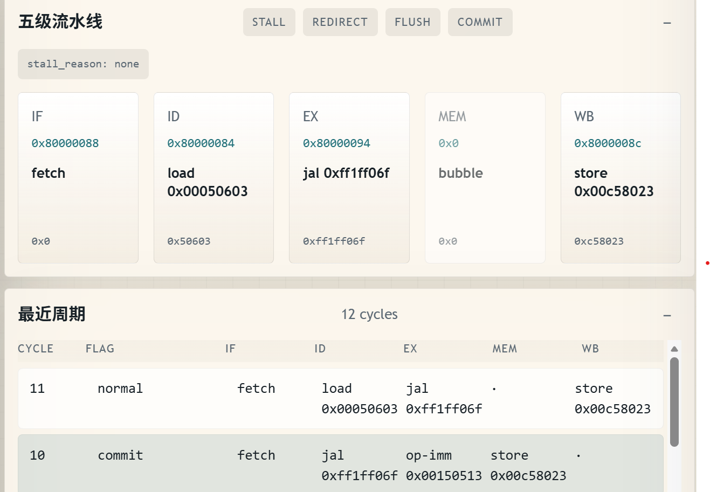
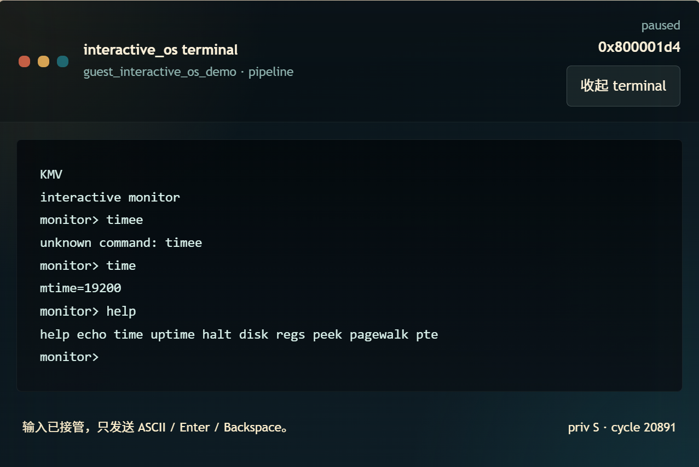
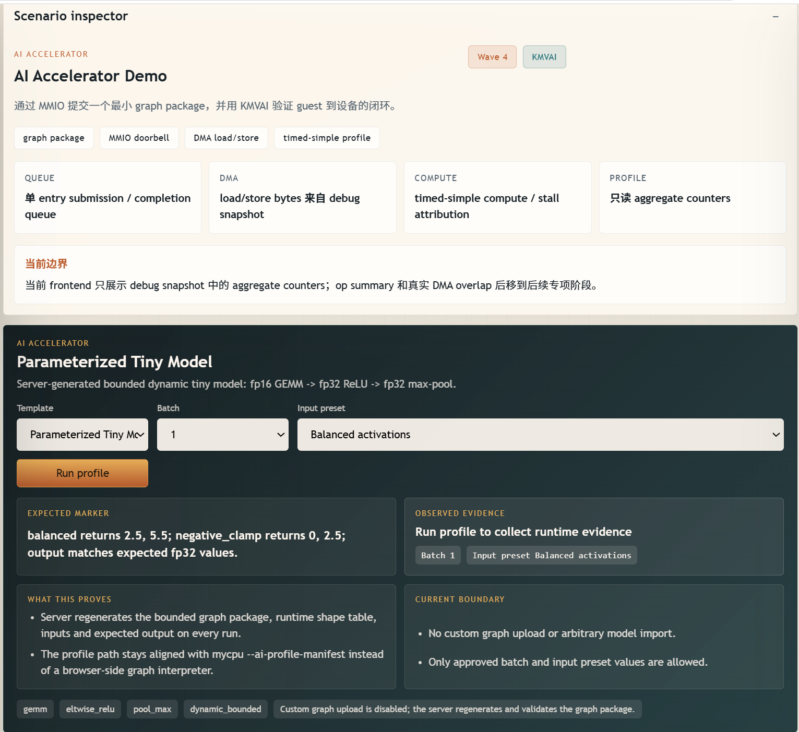

问题定义
为什么不能只做指令解释器：课程项目要证明 CPU、内存、特权、外设和系统软件能闭环。
计算机系统结构 · 课程项目结题
这是一个已经可运行的模拟器原型。项目从指令解释出发，逐步接上特权级、Sv39、外设、Guest OS、真实 workload、调试前端和验证体系，目标不是“跑通一个样例”，而是做出一条可观察、可验证、可继续演进的系统链路。

$ kernel_alpha_demo KMVPETDS $ xv6-riscv init: starting sh $ guest_vector_cnn_demo V3OK
10-minute narrative
页面不是论文正文，每一屏只放关键词；口头展开时按这六段讲，整体约 10 分钟。
为什么不能只做指令解释器：课程项目要证明 CPU、内存、特权、外设和系统软件能闭环。
四层结构：Host Simulator、Platform MMIO、Guest Runtime、Debug Frontend。
讲 ISA 真值来源、Sv39/trap、pipeline、设备平台和 guest OS bring-up。
用 KMVPETDS、xv6 shell、Linux checkpoint、V3OK、AI profile 展示“真的跑起来”。
分层测试、负向回归、Spike 差分和前端 Node 测试，说明结果可信。
讲工程取舍、当前不夸大的边界，以及 Linux 发行版、AI、JIT、多核方向。
project scale
C++ 重构不是语言偏好，而是对复杂度增长的结构性响应：共享语义、后端分层、设备边界和测试门禁都需要稳定组织。
engineering problem
一个系统模拟器真正难的地方，在于每层都要和其它层对齐：CPU 语义、外设时序、Guest 期望和调试证据不能互相脱节。
design method
what makes it hard
例如一次 page fault 可能来自 ISA 译码、CSR 权限、Sv39 walk、TLB flush、外设地址区间或 Guest 初始化顺序。项目采用小步 guardrail，把这类跨层问题拆成可定位的检查点。
system architecture
Host Simulator → Platform MMIO → Guest Runtime → Debug Frontend。四层分工清晰，运行时证据从底层一路投射到浏览器。
负责指令译码、共享语义、functional 参考路径、pipeline 后端和 JIT / DBT 原型边界。
把 Sv39、TLB、RAM、MMIO、cache observation 和访问错误整理成统一访存合同。
UART、CLINT、PLIC、块设备、virtio 路径和 AI Accelerator 通过设备合同接入。
Node debug server + 浏览器前端，把 workload、terminal、pipeline 和 profile 数据组织成 Lab。
project evolution
这条时间线适合讲“为什么项目能逐步变大但没有失控”：每一阶段都有明确边界和验证口径。
形成 RV64 基础语义、特权、trap、guest bring-up 与 Phase 1 冻结点。
pipeline 后端接入 rename、ROB、LSQ、最小 OoO execute 与 rollback 观察。
L1D 默认关闭 opt-in，shadow cache 证据，访存生命周期与边界 hardening。
完成 hot-path、translation contract、IR dry-run、host emitter 和 opt-in harness。
把首页、控制台、文档和 Linux serial console 整理成可体验入口。
标准 Linux 发行版平台，以及用户自定义 AI 任务 / NPU 性能模型。
core implementations
六个维度覆盖 CPU、内存、特权、微结构、系统软件和前端展示。每项都尽量有对应回归或可观察输出。
three deep dives
如果答辩老师追问细节，可以从这三块展开：它们最能体现系统结构课程项目的含金量。
01
这部分把普通指令模拟推进到系统级模拟：执行状态不仅有 GPR，还包括 privilege、CSR、页表、trap 和异常返回。
02
pipeline 后端重点不是重新发明 ISA，而是在共享语义之上实现 rename、ROB、LSQ、提交边界和回滚观察。
03
xv6、Linux-facing probe、AI demo 和浏览器 terminal 让系统从“单元测试能过”变成“能被用户操作和观察”。
running evidence
这一段建议现场重点讲：我们展示的不是“代码写了什么”，而是“系统实际跑到了哪里”。



verification
项目的验证目标是避免“能跑但不可信”。因此测试不是单层的，而是 asm、host、guest、frontend、外部 oracle 多层组合。
最小 asm、host unit 和模块 smoke 锁住 ISA、CSR、loader、MMU、设备和 helper 行为。
kernel_alpha 正向 + 负向基线、interactive_os、xv6 shell 和 Linux probe 证明系统链路。
Node debug server、terminal input pump、render state 和 workload manifest 有独立 Node 测试。
Spike differential 为高风险架构语义提供外部 oracle，尤其适合 trap 和 Sv39 子集。
cd myCPU && make test
cd myCPU && make test-pipeline
cd frontend && node --test
SPIKE_PATH=/path/to/spike make test-host-spike_differential
honest boundary
结题汇报要清楚说明“已经完成什么”和“没有夸大什么”。这能体现工程可信度。
current boundary
项目已有 JIT、cache、AI、Linux-facing 方向的原型和证据，但结题时不把它们包装成完整商用能力。
next engineering tasks
team
汇报时可按“主线 owner + 子系统负责人 + 交叉验收”的方式说明分工。
仓库主线维护、ISA / CSR / 内存与设备平台、guest runtime、前端调试链路、文档整理与最终联调。
pipeline backend、分支预测、rename、ROB、LSQ、提交边界、flush / rollback 与可观察状态。
asm 指令级测试、unit / host / guest smoke、pipeline 回归、frontend 测试、Spike differential。